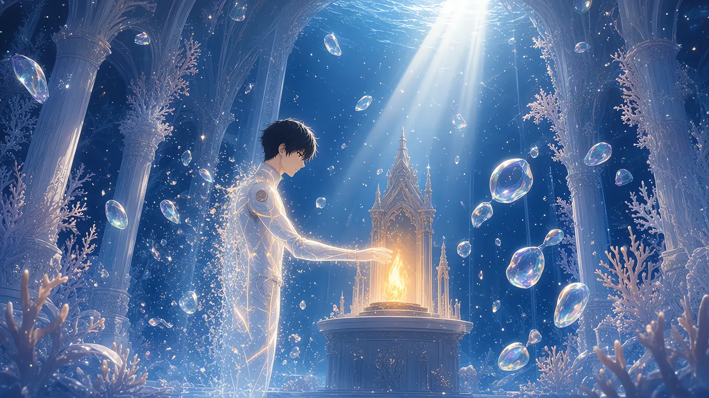

【破泡】
最初に戻ってきたのは、その二文字だった。
暗闇の中に、白い文字だけが浮かんでいる。音はない。痛みもない。ただ、自分の泡が割れたのだという事実が、静かに置かれていた。
【EXP −312】
【FRG 12 → 18】
数字が二つ、続けて灯って、消えた。
それから、光が来た。
＊
目をひらくと、雪が降っていた。
いや、雪ではなかった。虹色の、薄い破片だった。
割れたシャボン玉の膜のかけらが、天井の高いところから、ゆっくりと舞い落ちてくる。一枚一枚が、落ちながら色を変えた。真珠色から、薄い青へ。青から、翠へ。
僕の泡殻の、かけらだった。
ここは、礼拝堂だった。灯喰いのいた場所とは違う。もっと高い天井と、もっと細い柱。崩れかけた石のアーチに、白い珊瑚がびっしりと絡みついている。
尖った高い窓から、真珠白の光が一筋、斜めに差しこんでいた。光の中を、破片が雪のように降っていく。
祭壇には、灯りが一つだけ残っていた。
小さな尖塔の形をした祠の奥で、琥珀色の炎が一つ、じっと立っている。ほかの燭台は、どれも空だった。
僕の体は、ほとんど透きとおっていた。輪郭だけの、光の線。泡殻は、どこにもない。
【HP 0／410】
手を伸ばす。重さのない腕が、祭壇の灯りに触れた。
温かかった。
【HP 410／410】
【LUX 58／58】
【復活地点を記録しました】
体に、色が戻ってくる。白い潜水服。継ぎ目の琥珀色。そのまわりに、薄い膜がふくらんで、もう一度僕を包んだ。
右手は、空だった。
硝子の銛は、泡と一緒に砕けていた。降ってくる破片のどこかに、あの透きとおった穂先も混じっているのだろう。
＊
破片のあいだを、別の光が漂っていた。
小さな、金色の粒。何百も、何千も。
僕から離れていくのが分かった。胸のあたりから、ほどけるように抜けていく。
EXPだ。
Lv8で稼いだ経験値の、三割。数字にすれば312。それが、光の粒になって、礼拝堂の空気に溶けていく。
粒は、ゆっくりと床へ降りていった。祭壇の下、白い珊瑚の茂みへ。
白い枝は、何も流していなかった。浅瀬の端で見た、あの雪のような静けさ。誰にも思い出されなくなった言葉の、骨。
金色の粒が、その白に触れた。
一粒、また一粒。染みこんでいく。
白い茂みの真ん中で、何かが動いた。
小さな芽だった。白の中から、翠の色が、そっと頭をもたげる。花びらのような葉が、一枚ずつ、内側からひらいていく。
翠の珊瑚が、一輪、咲いた。
白い茂みの中で、そこだけが光っていた。

なくしたものが、咲いている。
僕は、ただそれを見ていた。
悔しいとも、きれいだとも、うまく言えなかった。両方が、同じ泡の中に入っていた。
＊
「おかえり」
声がした。
振り向くと、ベンチに誰かが座っていた。
木の長椅子が何列も並ぶ、その真ん中あたり。僕に背を向けて、小柄な人影が一人。
頭に、真鍮の潜水兜をかぶっていた。丸い窓のついた、古めかしい兜だ。その縁から、白い髪がこぼれている。肩には、重そうな鎧。
【千歳 Lv 99 潜騎士】
九十九。
この海で初めて見る、二桁の上限の数字だった。
「……ただいま、でいいんですか」
「いいんだよ。帰ってきたんだから」
兜の中から、くぐもった声が笑った。年を重ねた女の人の声だった。どこか、海辺の町の言葉の響きがある。
「あんた、灯喰いにやられたろう。いい割れ方してたよ。ここまで音が聞こえた」
「見てたんですか」
「聞いてただけさ。割れる音は、この礼拝堂まで届くんだ。だから、ここで待ってる」
「待ってる？」
「灯会の決まりでね。破泡したもんを、廃教会で待つ。それだけ」
カゲロウの言っていた、唯一の決まり。
「僕のこと、知ってたんですか」
「知らないよ」
あっさりと、千歳さんは言った。
「知らない誰かでも、待つんだよ。泡が割れて、一人で目を覚ますのは、さびしいからね」
僕は、何も言えなかった。
死んだ人から荷物が届いた夜、部屋の灯りはデスクライト一つだけだった。誰も待っていなかった。
ここでは、知らない人が待っていた。
長椅子の背もたれに、細かな傷がいくつも刻まれているのに気づいた。
文字だった。カタカナ、漢字、ローマ字。大きさも書き方もばらばらの、たくさんの名前。
「迎えたもんの名前さ」
千歳さんが、腰の小刀を軽く叩いた。
「名札はすぐ変わっちまうけど、木に彫ったのは残るからね。……あんた、名前は」
「表示は、こうです」
僕は頭上を指さした。にじんだ枠の中の、三つの疑問符。
「本当は、ルカっていいます」
「ルカ」
千歳さんは小刀を抜いて、背もたれの空いたところに、ゆっくりと二文字を刻んだ。
ル。カ。
システムの文字ではない、少し傾いた、人の手の字だった。名札は何も変わらない。それでも、その二文字は、確かにそこにあった。
＊
千歳さんは、祭壇の下の翠の珊瑚に、兜の窓を向けた。
「咲いたね」
「僕のEXPです。……たぶん」
「そうだよ。なくしたぶんだけ、海がきれいになる。そういう決まりなんだ」
千歳さんは、少し遠くを見るようにした。
「昔、全部還した人がいてね」
「全部？」
「経験値を、ぜんぶ。どうやったのかは知らない。でも、そこだけ珊瑚が森みたいになってる。いつか、連れてってあげるよ」
全部。三割でこれなら、全部を還したら、どれほどの森になるのだろう。
想像しようとして、やめた。それは、何もかもを手放すということだ。
ステータスをひらく。
【FRG 18】
12だったものが、18になっていた。
壊れやすさが、増えている。
「あの、FRGって……」
「上がってたろう」
千歳さんは、うなずいた。
「割れるたびに、上がるんだよ。壊れたぶんだけ、脆く、強くなる」
脆く、強く。
設計者として、その仕組みを想像した。壊れた人ほど、強い一撃を出せる。そのかわり、もっと壊れやすくなる。
残酷な設計だと思った。
同じくらい、正直な設計だとも思った。
「海はね、深いほど静かで、静かなほど光るんだよ」
千歳さんは、それだけ言った。説明というより、天気の話をするような口ぶりで。
＊
虹色の破片は、まだ降っていた。
降りながら、少しずつ薄くなっていく。床に届く前に、溶けて消えるものもある。
僕は、破片の一枚を手のひらで受けた。
その小さな膜に、何かが映っていた。
琥珀色の口。吸いこまれていく光。
ウタだ。
泡が割れる直前に見たものが、破片の中で、まだ揺れていた。灯りと同じ形に細くなって、闇の奥へ引きこまれていく、透きとおった体。
「……ウタ」
声に出した瞬間、破片は手のひらで溶けた。
「連れがいたのかい」
「深民の子です。案内役の。僕が、名前をつけた」
「名前を」
千歳さんの兜が、わずかに傾いた。
「それで、あいつに呑まれた」
「僕が、かばいきれなくて」
かばった、はずだった。泡殻ごと、間に入った。
それでも、届かなかった。
ステータスの数字は、全部正しかった。金色が出るか、もう一撃いるか。その賭けに、僕は夢中になっていた。数字の向こうにいるウタのことを、ほんの一瞬、忘れていた。
楽しいと思ってしまった、あの一瞬を。
祭壇の下で、翠の珊瑚が小さく光っている。
僕のなくした312は、あそこで咲いた。けれど、ウタは咲かない。経験値みたいに、誰かの美しさに還ったりはしない。
なくしていいものと、なくしてはいけないもの。数字は、その区別をしてくれなかった。
「深民はね、泡殻を持ってないんだよ」
千歳さんが、静かに言った。
「だから、割れない。そのかわり、食べられたら、食べたやつの中に残る。灯りと同じさ」
「……まだ、いるんですか」
千歳さんは、立ちあがった。
鎧が、重い音を立てた。真鍮の兜が、祭壇の灯りを映して鈍く光る。
思っていたより、ずっと小さな人だった。僕の肩くらいまでしかない。それなのに、礼拝堂の水がその人のまわりだけ、どっしりと動かない気がした。
「灯喰いの提灯、見たかい。食べた灯りの色で光るんだ」
「見ました。琥珀色の」
「さっき、ここから聞こえたよ。あいつの腹の底で、ちっちゃな歌がね」
六つほどの音。上がって、少し下がって、また上がる。
千歳さんは、兜の窓ごしに僕を見た。
千歳さんは言った。「あの子、まだあいつの腹の中で光ってるよ。迎えに行くかい」